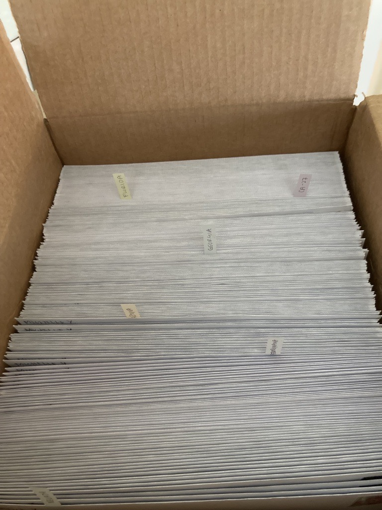

Michelle (she/her) is currently a graduate student studying PoliComms at UF CJC Online. She is living in Los Angeles, California where in the summer, the heat can be a bit too much for her. Her mood is much more agreeable now that it's "colder" and the days are consistently a nice 75 degrees. She's even celebrating the holidays early with reindeer antlers on Chevy Cruze.
Hobbies
Michelle's regular day can range from a busy 9-5 with school after to lumping in bed and watching The White Lotus with a bag of Cheetoes. She enjoys playing the piano, in particular learning the scores of musicals and jazz pieces. The immense guilt of abandoning her painting hobby has left her to pick up a paintbrush again for the first time in a while. It's going well - she hopes. Her other hobby includes playing video games with friends, including the FPS game VALORANT where she can heathily put all her anger toward.
Interests
In attempt to not gain a caffeine addiction, Michelle drinks a low amount of coffee but always enjoys a good cup of New Orleans. Only a 15 minute walk from her place, the Alchemist Project is Michelle's favorite coffee shop. As a person studying PoliComms, she also enjoys keeping up with electoral politics. This midterm, Michelle wrote over 200 handwritten letters to potential voters in key districts to encourage them to vote.

Box of Letters
that Michelle sent to voters in CA, PA, NV, AZ, FL and GA.
Career Goals
Michelle is currently working at a nonprofit that helps clients navigate barriers to entering the workforce, with a primary focus of helping people experiencing homelessness in Southern California. She works for their marketing/communications department to send out emails to donors and manage their social media channels. In the next couple years, Michelle hopes she can use her degree and interest in electoral politics to do actionable work.
Michelle will be on vacation from December 2, 2022 to December 19, 2022! Her email availability will be limited, but rest-assured, she will get back to you when she comes back from break.